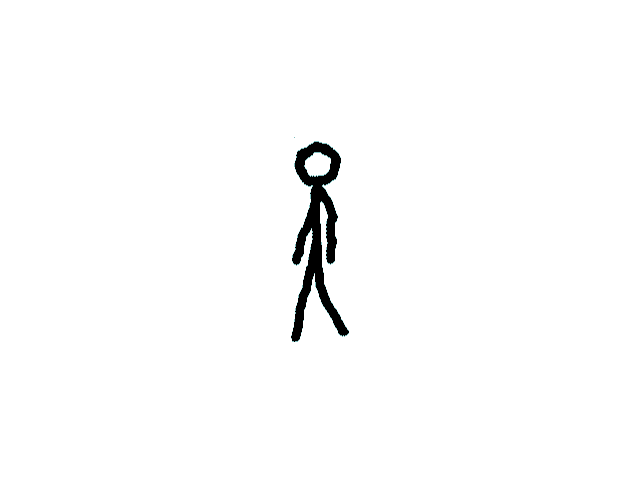
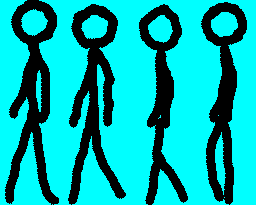

Animation

Last Updated: Jun 8th, 2025
Odds are you are going to want more than static images in your game. Here we'll be making a stick figure walk in place with basic animation.
Here is a set of frames of an animation on a sprite sheet:
Now lets show one sprite right after another every 10th of a second in a way that shows I am not an animator (walk cycles are hard, people):
That's how animating sprites works: showing one image after another to give the appearance of motion.

Now lets show one sprite right after another every 10th of a second in a way that shows I am not an animator (walk cycles are hard, people):
That's how animating sprites works: showing one image after another to give the appearance of motion.
//The quit flag
bool quit{ false };
//The event data
SDL_Event e;
SDL_zero( e );
//Timer to cap frame rate
LTimer capTimer;
//Current animation frame
int frame{ -1 };
Before we enter the main loop, we declare a variable to keep track of the current frame of animation.
//Start frame time
capTimer.start();
//Get event data
while( SDL_PollEvent( &e ) == true )
{
//If event is quit type
if( e.type == SDL_EVENT_QUIT )
{
//End the main loop
quit = true;
}
}
//Go to next frame
frame++;
//Cycle animation
constexpr int kWakingAnimationFrames = 4;
constexpr int kWakingAnimationFramesPerSprite = 6;
if( frame / kWakingAnimationFramesPerSprite >= kWakingAnimationFrames )
{
frame = 0;
}
After the event loop, we update the animation logic. We increment the frame counter every frame but we do not want the animation to change sprites every frame or it will be too fast.
Our application runs at 60 FPS but the animation runs at 10 FPS. So to convert the frame rates, we divide the frame counter by 6. Also, we want the animation to loop so when the animation goes past the 4th frame, we return the frame counter to 0.
Our application runs at 60 FPS but the animation runs at 10 FPS. So to convert the frame rates, we divide the frame counter by 6. Also, we want the animation to loop so when the animation goes past the 4th frame, we return the frame counter to 0.
//Set sprite clips
constexpr float kSpriteWidth = 64;
constexpr float kSpriteHeight = 205;
SDL_FRect spriteClips[ kWakingAnimationFrames ] = {
{ kSpriteWidth * 0, 0.f, kSpriteWidth, kSpriteHeight },
{ kSpriteWidth * 1, 0.f, kSpriteWidth, kSpriteHeight },
{ kSpriteWidth * 2, 0.f, kSpriteWidth, kSpriteHeight },
{ kSpriteWidth * 3, 0.f, kSpriteWidth, kSpriteHeight }
};
Here we define the clip rectangles. They all have the same width/height and y position. The only difference between them is the x position. First sprite is at x = 0 and 0 * sprite width is still 0. Next one is one sprite width over, the one after that is two sprite widths over, and
the last one is 3 sprite widths over.
//Fill the background
SDL_SetRenderDrawColor( gRenderer, 0xFF, 0xFF, 0xFF, 0xFF );
SDL_RenderClear( gRenderer );
//Render current frame
SDL_FRect* currentClip{ &spriteClips[ frame / kWakingAnimationFramesPerSprite ] };
gSpriteSheetTexture.render( ( kScreenWidth - kSpriteWidth ) / 2, ( kScreenHeight - kSpriteHeight ) / 2, currentClip );
//Update screen
SDL_RenderPresent( gRenderer );
//Cap frame rate
constexpr Uint64 nsPerFrame = 1000000000 / kScreenFps;
Uint64 frameNs{ capTimer.getTicksNS() };
if( frameNs < nsPerFrame )
{
SDL_DelayNS( nsPerFrame - frameNs );
}
In our rendering we get the current sprite clip and render it to the screen. This will cycle through our sprites to show the stick figure animating.
Addendum: Animation is a rabbit hole
Animation (completely ignoring the artistic side of it) is an incredible large field. There's concepts like skeletal animation, animation blending, morphing, animation channels, and such that are way beyond the scope of this tutorial but are key to any AAA game engine.
What is common to animation is that animations are sequences of values. Here we had a simple array of
However, for a Nasty Tetris Project, this is overkill because you're probably not going to be using any complex animations. Doing your animations with just an array of clip rectangles and an integer frame counter should be good enough.
What is common to animation is that animations are sequences of values. Here we had a simple array of
SDL_FRects to represent our sequence of values but in a real engine I would probably have an animation class with a getCurrentSprite( float currentTime )
method. With the animation encapsulated in a class, we can very easily do things like pause, change the animation speed, animation reversal, looping, etc which are common animation operations you see in game engines.However, for a Nasty Tetris Project, this is overkill because you're probably not going to be using any complex animations. Doing your animations with just an array of clip rectangles and an integer frame counter should be good enough.